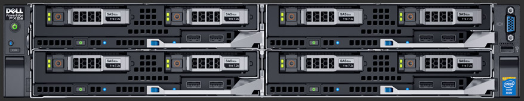

How we built the IDR
(And how you can build it too)
Simon Li
The Institutional Data Repository
- TODO: intro based on yesterday's talk
Overview: IDR Development
- Get hold of the data
- Buy some disks and servers
- Install OMERO.server (Docker)
- Setup a public OMERO.web
- Import some data
- Import more data
- Discover bugs in OMERO
- Import more data
- Discover bugs in hardware setup
- Import more data
- Discover more bugs
- Import more data
- Discover more bugs
Overview: IDR Production
- Mirror final deployment environment (OpenStack)
- Write Ansible playbooks
- Move to EBI Embassy
- Performance tuning
Dundee: our hardware

- Dell PowerVault MD3860f storage array + expansion enclosure: 450+ TB (300+ TB usable)
- 2 FC630 Dell storage servers (12 cores, 128 GB RAM)
- 6 FC630 Dell compute servers (28 cores, 256 GB RAM)
Dundee storage platform: GPFS
- Used by the School of Life Sciences
- Can be shared amongst multiple servers
- Takes a
lot of tuning
Dundee compute servers
- One production server (Docker)
- One development server (Docker)
- Four additional servers
- All running CentOS 7
Dundee compute servers
September 2015: OMERO on Docker
yum install docker
docker run -d -v /idr:/idr --name demo openmicroscopy/omero-deployDon't use `omero-deploy`, look out for a new production Docker image
September 2015: OMERO on Docker
omero import --
--checksum-algorithm=File-Size-64 --transfer=ln_s ...See Session 2: Extensible Import for details
System layout
Docker
October 2015: Official launch (EMBL Seeing is Believing)
November 2015: OpenStack at Dundee
- Open-source cloud platform used at EMBL-EBI
- Gives us full admin access to a private cloud
Difficult to install
OMERO on Docker on virtual machines?
- ✔ Easy to deploy OMERO
- ✔ Easy to upgrade
- ✘ Another layer of infrastructure to debug
What we'd really like: someone else to manage the infrastructure
February 2016: OMERO on OpenStack with Ansible
- First production use of Ansible with OMERO
- Single-node deployment
- Uses omego, our OMERO installation and upgrade tool
# omero.yml
- hosts: localhost
roles:
- omero-server
postgresql_users_databases:
- user: omero
password: omero
databases: [omero]git clone https://github.com/openmicroscopy/infrastructure
ansible-playbook run omero.ymlMarch 2016: Copy 40 TB of data from Dundee to Cambridge (400 miles)
- Option 1: Aspera (FTP on steroids)
- Option 2: Fedex
April 2016: Multi-node OMERO OpenStack deployment
- Use Ansible for creating VMs
- Use Ansible for installing and configuring OMERO
- PostgreSQL
- OMERO.server and web
- Front-end Nginx web-proxy
source openstack-credentials.env
ansible-playbook -i inventory/openstack.py \
-e @vars/ome2016-overrides.yml os-idr-uod.yml
May 2016: Redeploy at EBI
- include: os-create.yml
vars:
omero_vm_extra_groups: "uod-nfs,idr-hosts"
os_cloud_provider: uod
- include: os-volumes.yml
vars:
os_cloud_provider: uod
- hosts: database-hosts
roles:
- role: storage-volume-initialise
storage_volume_initialise_device: /dev/vdb
storage_volume_initialise_mount: /var/lib/pgsql
- hosts: omero-hosts
roles:
- role: storage-volume-initialise
storage_volume_initialise_device: /dev/vdb1
storage_volume_initialise_mount: /data
- hosts: proxy-hosts
roles:
- role: storage-volume-initialise
storage_volume_initialise_device: /dev/vdb
storage_volume_initialise_mount: /var/cache/nginx
- include: idr-dundee-nfs.yml
- include: os-omero.yml
May 2016: Redeploy at EBI
- include: os-create.yml
vars:
omero_vm_extra_groups: "u⃫o⃫d⃫-⃫n⃫f⃫s⃫ ebi-nfs,idr-hosts"
os_cloud_provider: u⃫o⃫d⃫ ebi
- include: os-volumes.yml
vars:
os_cloud_provider: u⃫o⃫d⃫ ebi
- hosts: database-hosts
roles:
- role: storage-volume-initialise
storage_volume_initialise_device: /dev/vdb
storage_volume_initialise_mount: /var/lib/pgsql
- hosts: omero-hosts
roles:
- role: storage-volume-initialise
storage_volume_initialise_device: /dev/vdb1
storage_volume_initialise_mount: /data
- hosts: proxy-hosts
roles:
- role: storage-volume-initialise
storage_volume_initialise_device: /dev/vdb
storage_volume_initialise_mount: /var/cache/nginx
- include: i⃫d⃫r⃫-⃫d⃫u⃫n⃫d⃫e⃫e⃫-⃫n⃫f⃫s⃫.⃫y⃫m⃫l⃫ idr-ebi-nfs.yml
- include: os-omero.yml
May 2016: Production tuning
- OMERO.server: Loading screens is slow
- Each screen is several GB
- BioFormats may have to load 1000s of files
- Browsers: 384-well plate involves loading 384 thumbnails
- But at least it's read-only and web-only (for now)
May 2016: Production tuning
Screenshot, overlay with text
- OMERO.server: Bio-Formats cache
- Nginx: Very aggressive front-end caching
- Clients: Optimise HTTP protocol
May 2016: Production tuning
Screenshot, overlay with text
Scripts to pre-warm cache
- All filesets in OMERO (NN)
- All thumbnails (NN million)
- All metadata for Screens and Plates (NN)
May 2016: Production tuning
Screenshot, overlay with text
Cached on first request
- Images
- Image metadata